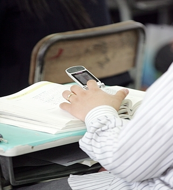
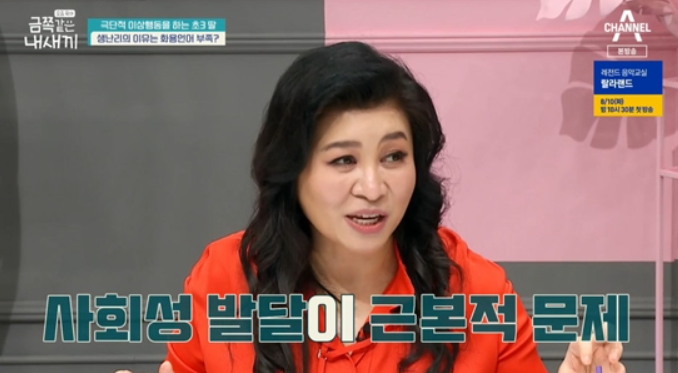
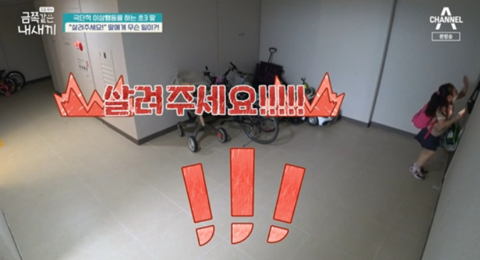
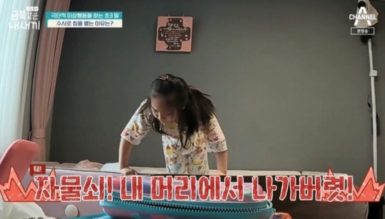
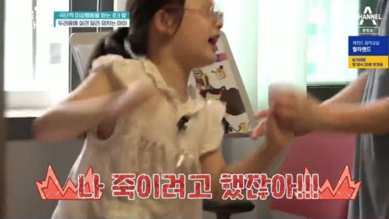
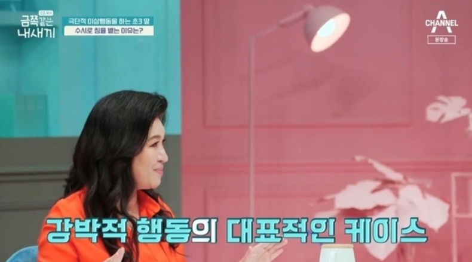

1. 상대 말의 의미 파악이 잘안되는 사회성 미숙, 과민하게 이상행동을 하는 금쪽이
8월 6일 방송되는 채널A ‘요즘 육아 - 금쪽같은 내새끼’에서는 극단적 이상행동을 하는 초3 딸의 사연이다. 화날 때마다 침을 뱉는 초등학교 3학년 금쪽이의 심정을 알고 싶어 해 엄마, 아빠와 함께 공개되었다. 금쪽이는 논리정연하게 자신의 의견을 말하던 도중 아빠가 다른 주제로 바꿔보자고 하자, 갑자기 싫다며 소리를 지르고 발버둥을 치기 시작한다.
2. 화용 언어가 부족하여 사회성 발달이 낮은 아이
하교 후 집으로 오던 금쪽이는 닫힌 현관문 보고 갑자기 살려달라며 비명을 지르고 계속 복도를 뛰어다니는 이상 행동을 보여 출연진들을 깜짝 놀라게 한다. 이를 지켜보던 오은영은 앞서 토론에서 말을 잘하던 금쪽이가 ‘사실은 언어 문제가 있는 아이다’라는 반전 해석을 내놓는다. 이어 금쪽이는 “상황에 맞게 상대방의 입장을 이해해 사용하는 단어, ‘화용 언어’가 부족해 사회성(사회성이란 생활속에서 자주 일어나는 상황에 적절하게 이해하고 공감하여 대처할 수 있는 대응전략 능력) 발달에 어려움이 있다”고 분석한다. 아이는 닫힌 현관문을 보고 살려달라고 외쳤던 장면을 짚어내 “불편하다고 하는 것을 살려달라고 표현한 것, 즉 ‘화용 언어’를 잘 사용하지 못하는 모습이다”라고 덧붙인다.
 
3. 험한 말을 하고 죽을거라고 흥분, 극단적 이상 행동을 하는 과민성
엄마는 아토피가 심한 금쪽이를 위해 연고를 발라 주려 하자 금쪽이는 냄새가 난다며 거부한다. 엄마는 냄새가 나지 않는다며 금쪽이 콧등에 연고를 바른 손을 직접 가져다 댄다. 금쪽이는 콧등에 묻은 연고를 살짝 핥더니 이내 곧 죽을 거라며 또다시 흥분하기 시작한다. 좀처럼 흥분이 주체가 되지 않던 금쪽이는 엄마에게 “엄마 죽일 거야! 꺼져”라는 험한 말을 하고 바닥에 침을 뱉어내는 극단적 이상 행동을 보인다.

4. 강박적 증세를 보이며, 가장 과민하고 힘든 순간 침을 뱉는 충격적인 행동 방식
오은영은 “이 상황에서는 훈육이 적절하지 않다, 과민성을 낮추지 않으면 다음 단계로 진행이 어렵다”라며 금쪽이를 이해하는 것이 쉽지 않을 것이라 예고한다. 금쪽이는 자신이 불편하고 불쾌한 상황이 있을 때마다 엄마에게 침을 뱉는 문제 행동을 보였다. 뿐만 아니라 혼자 있을 때도 바닥 혹은 자기 몸에 침을 뱉는 등 자신의 안정을 위한 경직된 방식을 나타낸 것 같다"고 말했다. 이어 "엄마가 싫은 게 아니라 가장 과민하고 힘든 순간마다 엄마가 불편한 마음을 더 강화시키니까 그 불편을 뱉어내는 걸 통해 불편함을 정화하는 거다"고 설명했다.
 
그러면서 "쉽게 말해서 우리들도 내가 싫어하는 사람과 닿으면 손을 씻어내지 않나. 그런 것처럼 금쪽이도 그런 면이 있는 것 같다"고 비유했다. 즉 아이는 일반적인 자극에 대해 과도하게 후각, 시각, 촉각 등이 지나치게 예리하고 민감한 성질을 나타낸 것이다.
(사진=채널A ';요즘 육아 금쪽같은 내 새끼' 캡처)